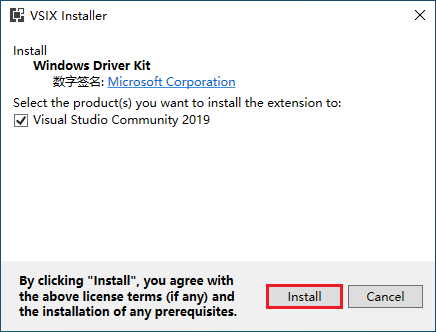

Windows内核编程02|环境搭建和部署测试
1.安装VisualStudio2019
2.安装WindowsDriverKit

3.创建项目
4.添加代码
// driver.c
#include <ntddk.h>
// DriverEntry Routine
DRIVER_INITIALIZE DriverEntry;
// Unload Routine
DRIVER_UNLOAD DriverUnload;
// DriverEntry: 驱动程序的入口点
// DriverObject: 驱动程序对象
// RegistryPath: 注册表中的路径(驱动程序路径)
NTSTATUS
DriverEntry(
_In_ PDRIVER_OBJECT DriverObject,
_In_ PUNICODE_STRING RegistryPath
)
{
// 编译器默认的警告等级为 /W4，
// 并且开启 /WX 将警告视为错误，
// 对未引用的参数或变量会报错(C4100).
// 方法1: 删除参数名，或者注释掉参数名
// 方法2: 将警告等级设置为 /W3 或者关闭 /WX
// 方法3: 微软推荐使用 UNREFERENCED_PARAMETER
// UNREFERENCED_PARAMETER 啥也没干，只是一个空引用的宏.
UNREFERENCED_PARAMETER(RegistryPath);
// 非WDM驱动(NT) Unload Routine 是可选的.
// 如果不设置 Unload Routine，正常情况下驱动模块将无法被卸载
DriverObject->DriverUnload = DriverUnload;
// 如果 DriverEntry 返回值不为 STATUS_SUCCESS，
// 驱动将不会被加载，Unload Routine 也不会被调用
return STATUS_SUCCESS;
}
// Unload Routine
VOID DriverUnload(_In_ PDRIVER_OBJECT DriverObject)
{
UNREFERENCED_PARAMETER(DriverObject);
}
5.编译
6.驱动的兼容性问题
-
系统位数的兼容性
x86的系统只能加载x86的驱动，x64的系统只能加载x64的驱动- 内核里没有
WOW机制，不像应用程序，x64系统可以运行x86程序
-
系统版本的兼容性
-
建议将项目的
Target OS Version设置为Windows 7，这样就可以兼容几乎所有Windows版本.
-
7.x64 Driver Signature Enforcement (DSE)
从
Vista开始，x64操作系统需要签名才能加载驱动，这里简单介绍几个解决方法.
| 方法 | 说明 |
|---|---|
使用x86系统部署驱动 |
只是为了方便测试 |
进入测试模式bcdedit /set testsigning on |
如果开启了Secure Boot进入测试模式将会失败 |
在系统引导的时候按F8选择禁用驱动程序签名强制 |
Win10按住Shift键然后点击重启进入高级启动 |
| 进入调试模式，挂上调试器. | 如果系统启动后挂上调试器，需要系统断下来一次 |
| 使用泄露的过期签名，并修改系统时间给自己的驱动签名 | 会被杀毒软件查杀 |
使用有任意读写漏洞的驱动，强制禁用DSE |
https://github.com/hfiref0x/DSEFix |
| 使用有任意读写漏洞的驱动，手动内存加载驱动 | https://github.com/hfiref0x/TDL |
使用系统漏洞或Bootkit |
兼容性差，稳定性差，不推荐 |
当然也可以使用亚洲诚信对刚才生成的驱动程序进行签名。
8.部署驱动程序
使用DriverMonitor可以加载驱动程序，同时在DbgView中也可以看到我们在驱动程序中写的输出。
- 使用系统自带的
sc.exe就可以完成驱动部署 - 写一个
load.bat批处理来方便我们做驱动的部署
@REM load.bat
@echo off
set serviceName=MyDriver1
set binPath="C:\Users\Win10_1909_64\Desktop\MyDriver1.sys"
@REM LoadDriver
@REM HKLM\System\CurrentControlSet\Services\%serviceName%
sc create %serviceName% binPath= %binPath% type= kernel
sc start %serviceName%
pause
@REM UnloadDriver
sc stop %serviceName%
sc delete %serviceName%
pause
- 原文作者：Binean
- 原文链接：https://bzhou830.github.io/post/20191228WindowsKernelPrograming02EnvSetup/
- 版权声明：本作品采用知识共享署名-非商业性使用-禁止演绎 4.0 国际许可协议进行许可，非商业转载请注明出处（作者，原文链接），商业转载请联系作者获得授权。